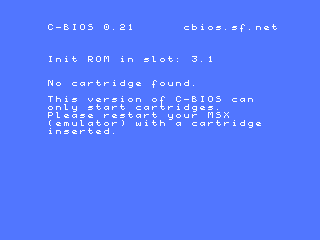

openMSX used to be difficult to install, but it isn't difficult at all, nowadays! At least: it shouldn't be.
The easiest way to install openMSX is to use a ready-made package. Whether one is available depends on your operating system:
.exe file you can find in the downloads section of the openMSX SourceForge.net site. After this, you should have a working openMSX and openMSX Catapult.
.dmg file from the downloads section of the openMSX SourceForge.net site. There is no Catapult for OS X yet.
openmsx, cbios and openmsx-catapult packages. The simplest way is to run apt-get install openmsx-catapult, APT will install the other needed packages as well.
/etc/apt/sources.list.
Note that in any case, there are no system ROMs installed, so only the C-BIOS machines work out-of-the-box. See also the next couple of questions.
If you still think openMSX is difficult to install, please tell us why!
We strongly recommend to use the EXE. It contains a very comfortable installer and really won't touch your Windows registry if you don't want that! The price you pay if you want the registry unharmed: you can't use the built-in uninstaller...
With the EXE, your openMSX experience is only about 3 clicks away. The ZIP file is meant for experienced users mostly.
Maybe you noticed that the ZIP file is a little bit bigger than the EXE. The reason for this is that the EXE file has better compression! The actual contents is exactly the same.
The MSX system ROMs are copyrighted. In other words: it's illegal to include them in our software package without a license. The Setup Guide contains a section about system ROMs.
As of version 0.5.0 you can put all the ROMs in a ROM pool, which is a central ROM directory. The default location is share/systemroms.
You can also do it in the way of the older versions: put the ROMs for the machine called WHATEVER in share/machines/WHATEVER/roms and for the extension called WHATEVER in share/extensions/WHATEVER/roms.
See also the Setup Guide.
Ever since openMSX comes with the optional GUI dubbed "openMSX Catapult", it is not difficult to use either! The Windows installer installs it by default. For other systems, the same counts as for openMSX itself. Check out the Catapult manual for more information. For basic usage, you just select a machine to run and click on "Start"!
Catapult doesn't give you access to all features of openMSX, though. You can do a lot more by using the openMSX built-in console. You can read a lot more about this in the User's Manual.
If you still think openMSX is difficult to use, please tell us why! Contact info is in the manuals.
Oh, you might wonder: why don't you make a normal GUI like other emulators? One in which the emulation is inside the GUI? The reason is that we are currently not able to make that: the wxWidgets toolkit we use does not support it and we want to keep the GUI optional, so we cannot make it part of the main application. This may change in the near future, when we are going to use the Qt toolkit to make the GUI.
You are probably talking about this:

openMSX doesn't come with any system ROMs, see 3. Why doesn't openMSX come with system ROMs?. To have something to be able to run some software, openMSX comes with a free replacement of an MSX BIOS ROM called C-BIOS, written by BouKiChi, Reikan and nowadays the C-BIOS Association. This is also what you can see in the screen: C-BIOS 0.21.
So, the message is not from openMSX, but from C-BIOS, which tries to start a cartridge that is inserted in the MSX that is being emulated by openMSX. And it seems you didn't insert any cartridge for it... So, either run openMSX with a ROM image or install real MSX system ROMs for a certain machine and run that one.
Note that the current version of C-BIOS can only run cartridges and does not support disk or tape usage. More information can be found in the Setup Guide.
This is explained in the User's Manual.
The real GFX9000 has an external video connector to which you can connect a second monitor. Because of limits of the SDL library we used to create openMSX, we cannot have more than one window for openMSX, so we cannot emulate a second monitor. To see the GFX9000 in action, you need to switch the videosource setting, which equals to a so-called SCART-switch in the real world: set videosource GFX9000. If you started openMSX without GFX9000 extension, this videosource is not available. To get your normal MSX screen back, you should type set videosource MSX. If you want to toggle with a hot key between them, it might be useful to bind a key for it. E.g.: bind F6 cycle videosource. cycle is a TCL command that cycles through the options of the setting in the parameter.
Note that GFX9000 emulation does not work with the SDLGL renderer yet and that it's incomplete, slow and buggy anyways...
Open the console with F10 (Cmd+L on Mac) and type:
If you have autosave_at_exit set to on, this change will be permanent, until you load another icon set. This gives you the default:
You can look in the following places for answers:
irc.freenode.net (freenode network) and join channel #openmsx. It is possible you will not get a reaction immediately, so please ask your question, stay logged in and check from time to time if someone is active.
$Id$